UniMind · Open Folio
Actual candidate browser captures compared with the audited product and founder-approved reference. This evidence page is not the application or a working prototype. Open an image for its original pixels.
Approval and scope · Acceptance and limits · Feedback record · Capture inventory · Four-fix verdict
Desktop comparisons use 1440 × 900 CSS viewports. Native screenshot pixels differ from CSS viewport dimensions on this renderer (for example 1430 × 894); both measurements are recorded without inferring a device performance result. Images are neither edited nor cropped. Reference captures contain a review-only toolbar. All content is synthetic; no credentials, tokens or private source data are retained.
Study Shelf
Same five initial subjects, eight sample materials each; EN/light, desktop. The reference includes its 64px review toolbar; the app includes a truthful synthetic notice. Resume remains absent in this initial state.
Chat
Anatomy, empty initial conversation, EN/light. Existing session/privacy and output-language controls remain in the implementation; Send is visible without hiding those capabilities.
Studio
Anatomy, initial empty summary, EN/light. The real application retains all six artifact formats, depth/size and existing evidence limitations; the prototype simulated fewer formats.
Source intake
Same assigned sample Anatomy campaign, initial empty queue, three requests, EN/light. Real file choice replaces prototype Add sample file; effective 10 October deadline remains ahead of campaign closure.
Decision review
Same Hide unit target, version 2, empty reason, initial document top, EN/light. Reference uses shortened fixture labels; the actual protected scope/readiness remain. Starting unselected is shown separately below.
Responsive, RTL and interaction states
These states are reached through real shared controls with local synthetic services. Screenshots illustrate visual feedback; rejecting tests separately check keyboard, cancellation, evidence bindings and role isolation.
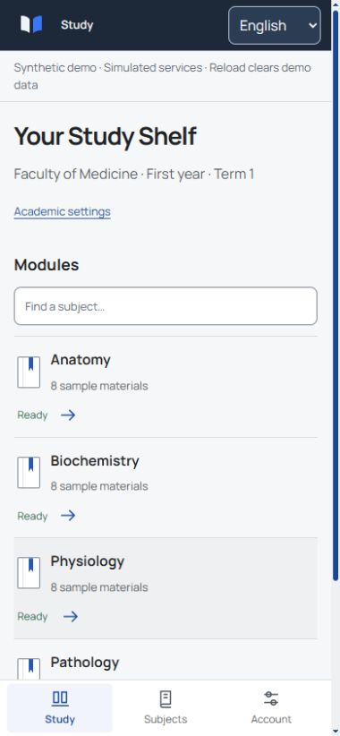
Student · 390 × 844 · en / light · document scroll 0px. Student shelf, same module fixture, light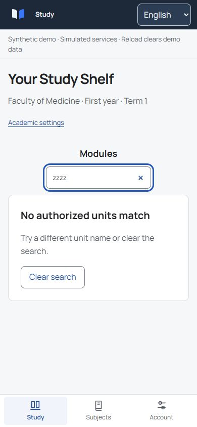
Student · 390 × 844 · en / light · document scroll 0px. Search matches no modules; focused input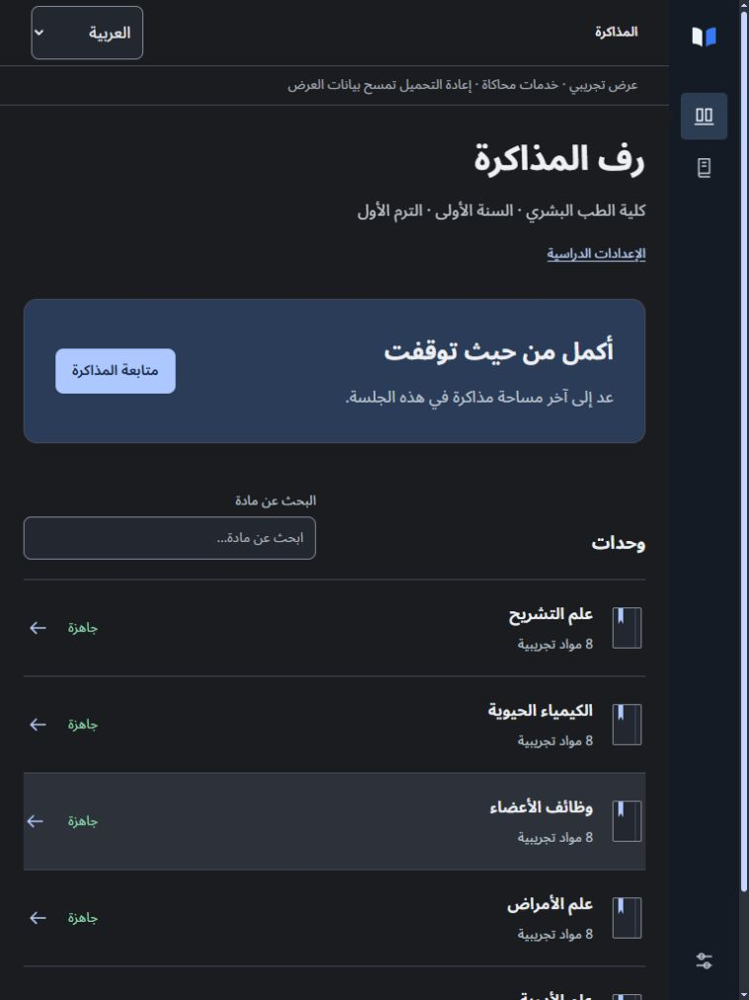
Student · 768 × 1024 · ar / dark · document scroll 0px. Arabic dark shelf; tablet rail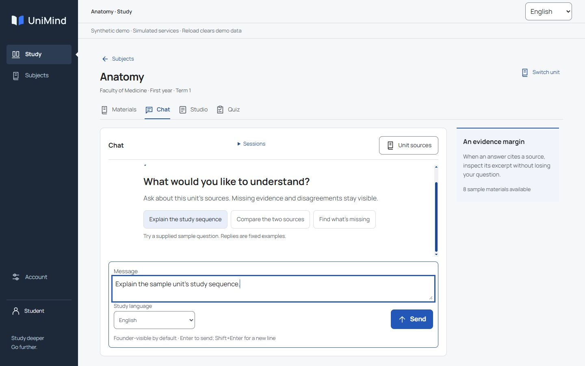
Student · 1440 × 900 · en / light · document scroll 0px. Suggested question fills the focused composer; not yet submitted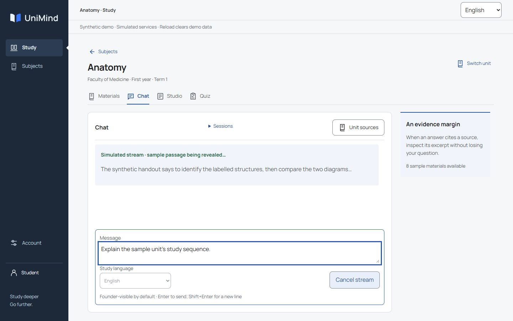
Student · 1440 × 900 · en / light · document scroll 0px. Submitted fixed-example question; generating state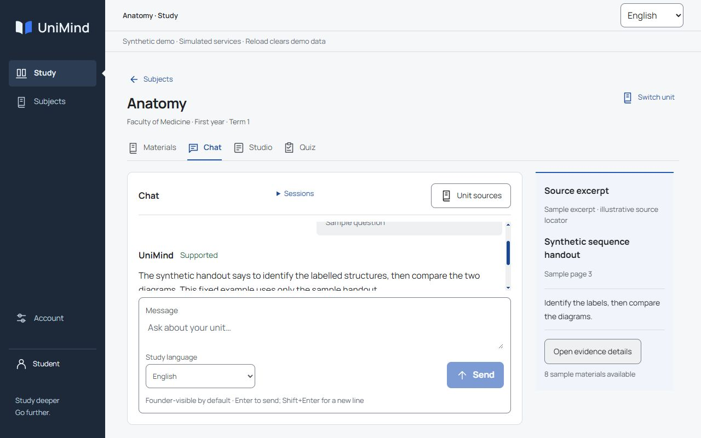
Student · 1280 × 800 · en / light · document scroll 0px. Same supported exchange at laptop size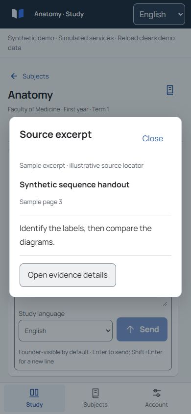
Student · 390 × 844 · en / light · document scroll 0px. Same exchange with native modal citation review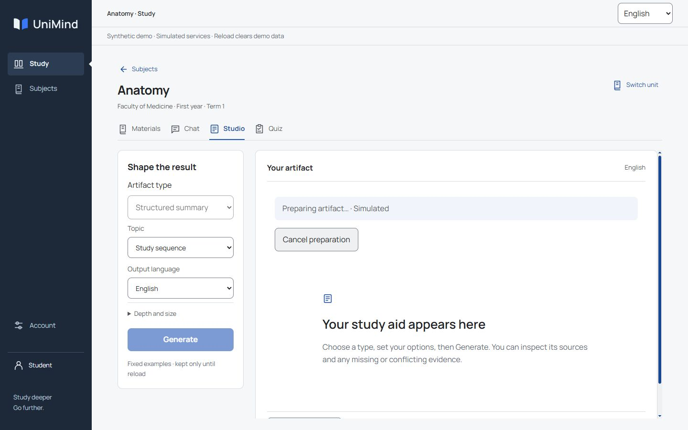
Student · 1440 × 900 · en / light · document scroll 0px. Pending generation with cancellable status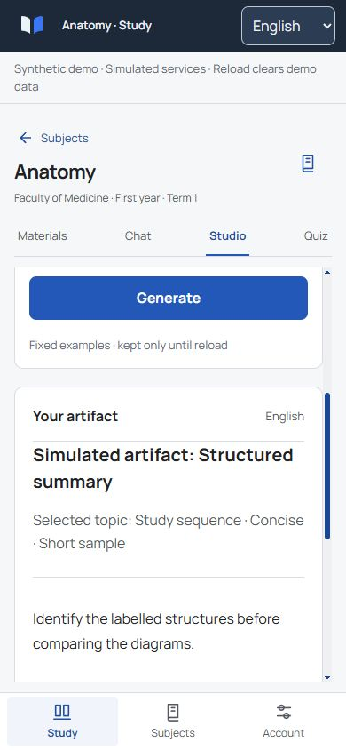
Student · 390 × 844 · en / light · document scroll 0px. Studio controls and generated artifact below the first viewport The inner workspace is scrolled toward generated result/action; this does not prove initial control placement.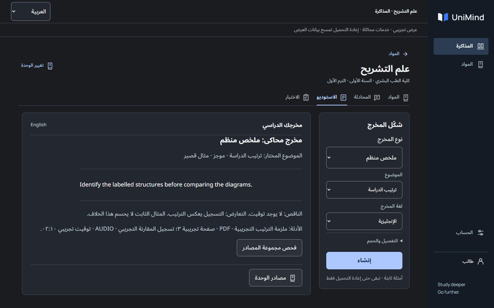
Student · 1440 × 900 · ar / dark · document scroll 0px. Arabic dark interface with English example artifact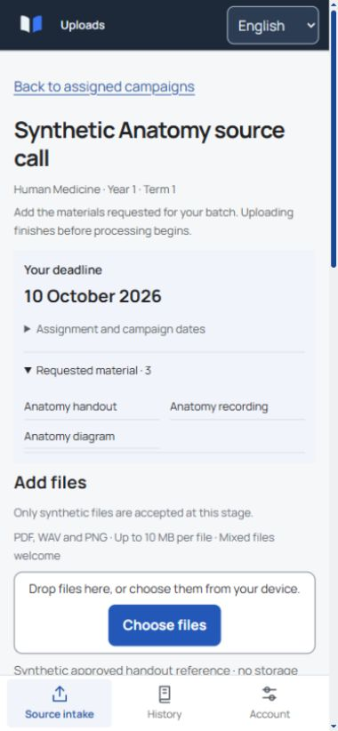
Batch Leader · 390 × 844 · en / light · document scroll 0px. Batch Leader; initial empty intake; English light; corrected Choose files fully above fixed 64px navigation including classic scrollbar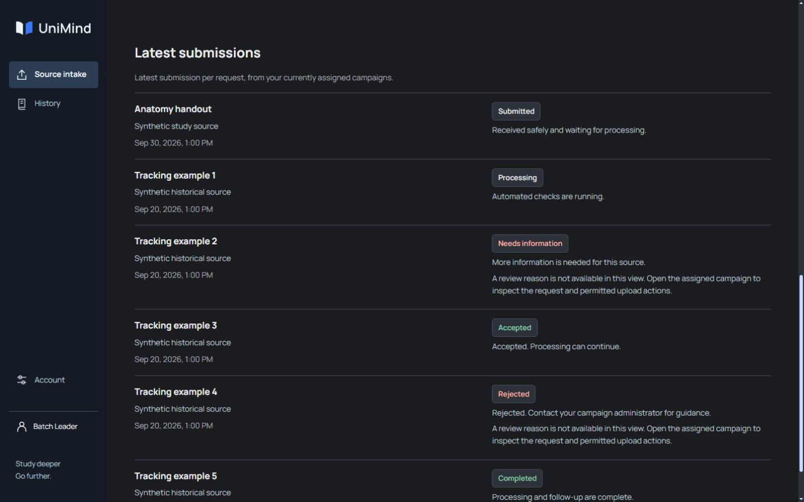
Batch Leader · 1440 × 900 · en / dark · document scroll 1230px. Latest submissions after local receipt; submitted, processing, needs information and rejected rows This is latest-submission history, not receipt-stage evidence.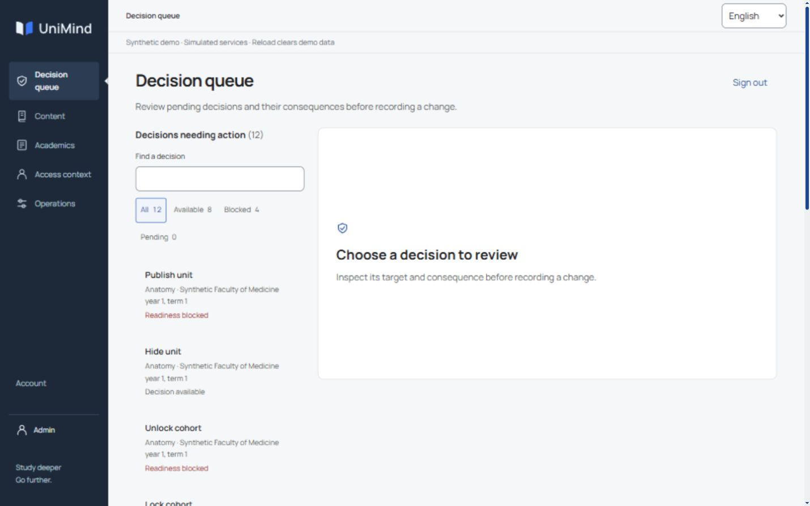
Admin · 1440 × 900 · en / light · document scroll 0px. Admin independently signed in; all 12 candidates; no implicit decision; corrected narrow queue and empty paper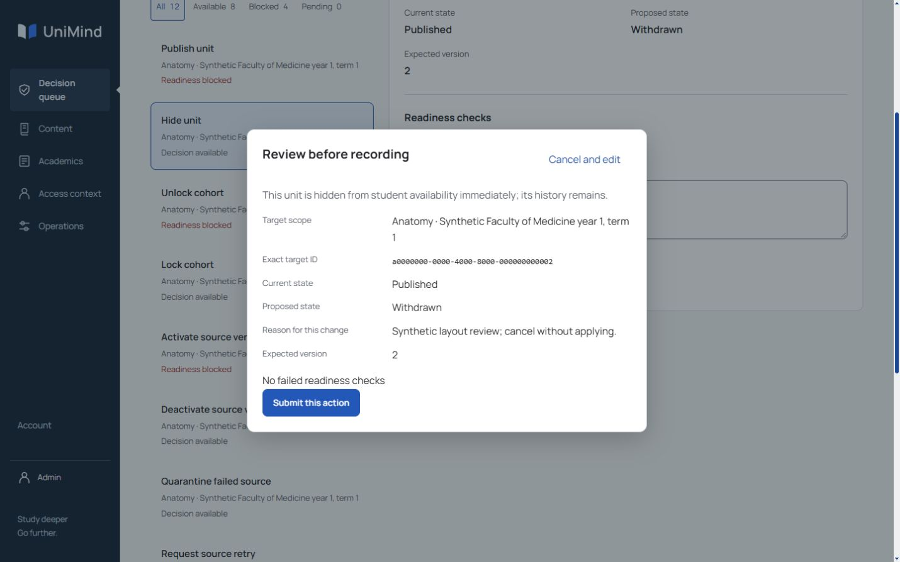
Admin · 1440 × 900 · en / light · document scroll 363px. Exact-change modal, noncommitting initial focus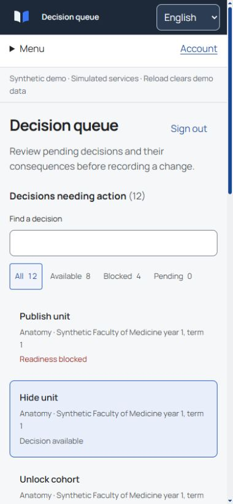
Admin · 390 × 844 · en / light · document scroll 0px. Phone decision list after deliberate Back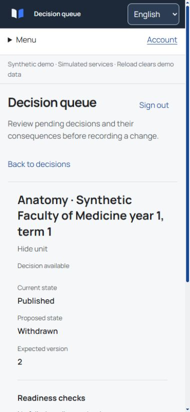
Admin · 390 × 844 · en / light · document scroll 0px. Phone detail from top with Back to decisions visible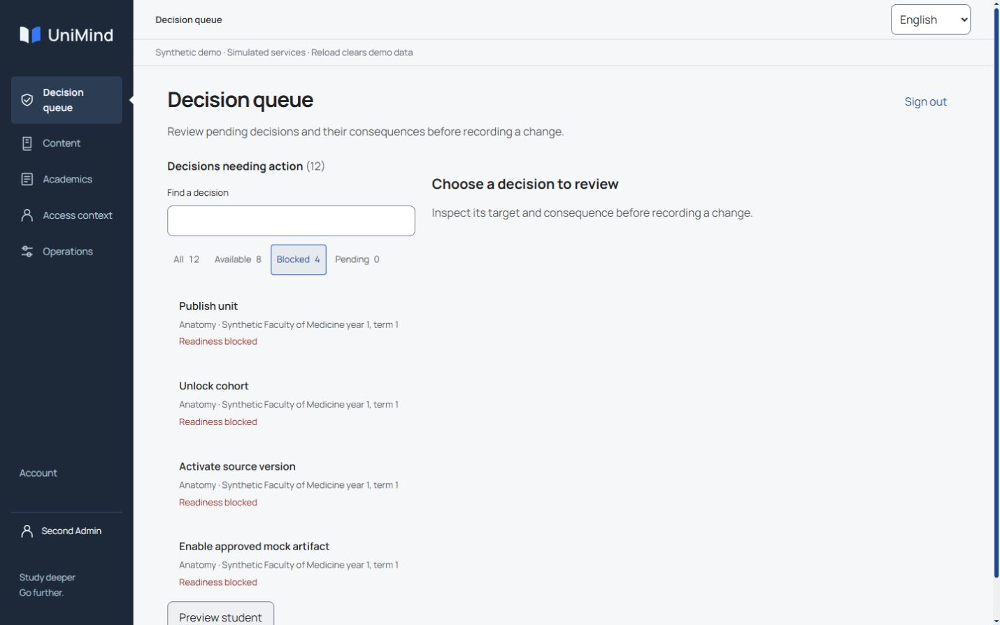
Second Admin · 1440 × 900 · en / light · document scroll 0px. Derived blocked decisions; no action applied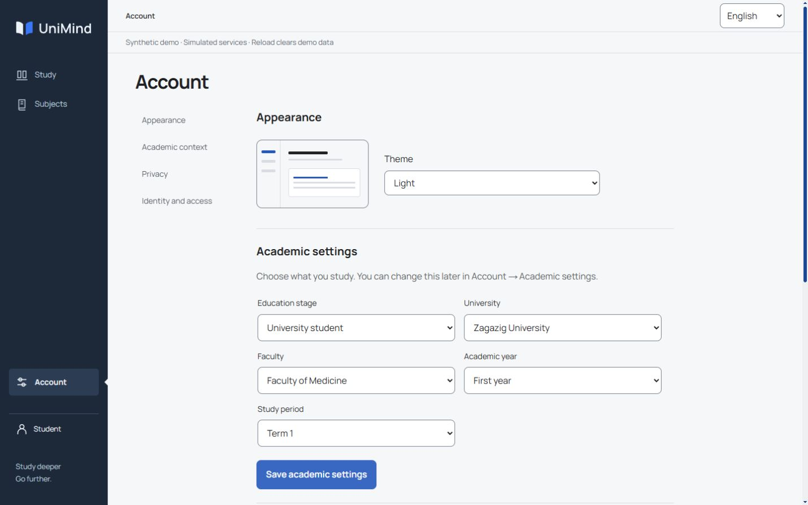
Student · 1440 × 900 · en / light · document scroll 0px. Student account; light; academic draft visible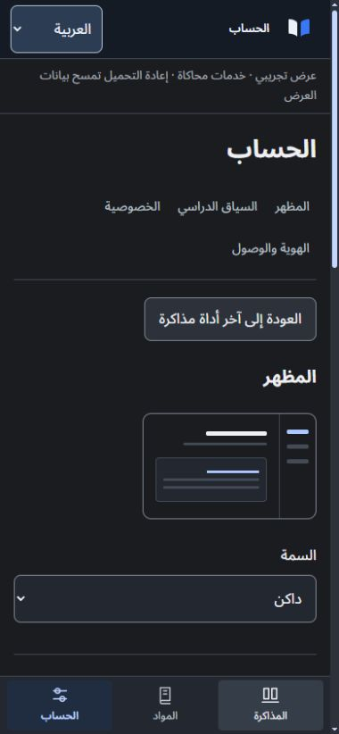
Student · 390 × 844 · ar / dark · document scroll 0px. Arabic dark account; actual settings sections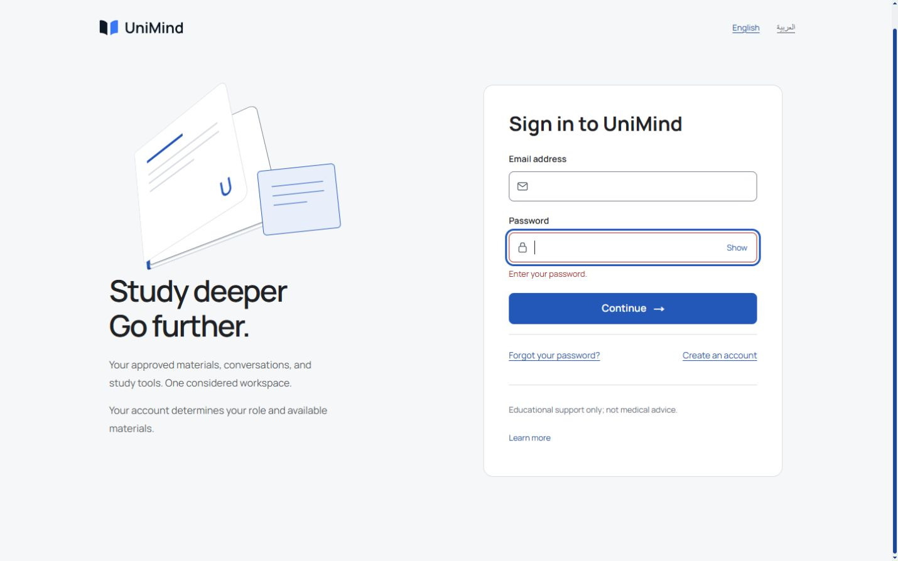
Public · 1440 × 900 · en / light · document scroll 36px. Blank password validation, associated error and focusNo participant timing, performance metric, physical-keyboard or screen-reader result is claimed. Complete technical and production gates are recorded separately.